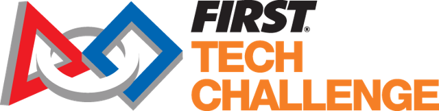

What is FTC?
New to robotics competitions? Here's what you need to know about FIRST Tech Challenge: what it is, how a season and a match work, every recent game in interactive 3D, what teams win awards for, and how you can get involved.
FTC score calculatorScore a match for any game since 2017–18, with ranking points. Code Lab: practice FTC programmingDebug real robot code, write methods, and program a simulated autonomous. Ask Steel AI about the rulesSearches the official game manuals for every season since 2017–18.What is FIRST Tech Challenge?
FIRST (For Inspiration and Recognition of Science and Technology) is a nonprofit founded in 1989 by inventor Dean Kamen. It runs robotics programs for students from kindergarten through high school.
FIRST Tech Challenge (FTC) is the program for grades 7–12. Every September, FIRST reveals a brand-new game. Teams then design, build, and program a robot to play it, and compete against other teams throughout the school year.
It's more than robots. Teams also raise money, run outreach in their communities, document their work in an engineering portfolio, and present to judges. Steel Surge is one of these teams.
- Who
- Grades 7–12
- Alliances
- 2 vs 2
- Match length
- 2:30
- Robot size
- 18 in
From kickoff to championship
An FTC season runs roughly from September to April. Each region organizes its events a little differently, but most teams follow the same path.
Kickoff
In September, FIRST reveals the game, its field, and its rules. Teams start brainstorming and prototyping right away.
Build & test
Teams design in CAD, build, program, practice driving, and keep improving the robot all season.
Qualifiers
Over the winter, teams compete at scrimmages, league meets, and qualifying tournaments to earn a spot at the next level.
Championships
Top teams advance to their state or regional championship, and the best go on to the FIRST Championship in the spring.
Every FTC game, explained
Pick a season to read how its game worked and explore an interactive 3D replica of its field. The current season opens first.
Drag to orbit, scroll or pinch to zoom, and hover over a part to learn what it is. Models are simplified replicas built from the official Competition Manual; see the manual for exact dimensions.
How a match works
Matches are played on a 12 × 12 foot field by two alliances of two teams each, red and blue. During qualification matches, alliance partners are assigned at random, so you might team up with a team you face in the very next match.
Robots run pre-written code with no driver input.
Drivers pick up their controllers.
Two drivers per team control the robot to score as much as possible.
The final 30 seconds, often with special bonus tasks.
- Rankings: after qualification matches, teams are ranked by ranking points, which reward winning and completing special objectives.
- Alliance selection: the top-ranked teams choose their own alliance partners for the playoffs.
- Playoffs: alliances face off until one is crowned the winning alliance.
- Inspection: before competing, every robot is checked to make sure it's safe, legal, and within the size limit.
Winning isn't only about matches
Judges interview every team and review its engineering portfolio, a short document about the team's design process, outreach, and plans. Many awards help teams advance, just like winning matches. Award names and criteria can change between seasons, and not every award is given at every event.
Inspire Award
The top judged award. It goes to the team that best shows what FTC is all about: a strong robot, a great engineering process, outreach, and Gracious Professionalism.
Think Award
For a team whose engineering portfolio clearly shows its design process.
Connect Award
For a team that connects with its community and with engineers and professionals.
Innovate Award
For a creative, robust robot design or mechanism.
Control Award
For smart use of programming, sensors, and autonomous control.
Motivate Award
For a team that shares the excitement of FIRST and recruits others to join.
Design Award
For a robot that's both functional and well designed, inside and out.
Dean's List
Honors individual students for leadership and dedication to FIRST.
Compass Award
Recognizes an adult coach or mentor, nominated by the team's students.
Winning & Finalist Alliance
For the teams on the alliances that finish first and second in the playoffs.
Two words you'll hear a lot
Gracious Professionalism®
Compete as hard as you can while treating everyone with respect and kindness. In FTC, it's normal to lend a rival team a spare part or help fix their robot.
Coopertition®
Cooperation and competition at the same time. Your partner in one match may be your opponent in the next, so teams learn to work with everyone.
There's a role for everyone
Students
No experience needed. Teams need builders, programmers, designers, writers, and people who love talking to others. Ask us about joining.
Parents
Families help with rides, snacks, fundraising, and cheering in the stands. Events are a great way to see what your student has built.
Mentors
Engineers, programmers, machinists, designers, and business professionals can make a huge difference with just a few hours a month.
Sponsors
Funding, parts, tools, machining time, or a place to build all keep a team running. See our sponsor tiers.
Volunteers
Events need judges, referees, inspectors, and field crew. You can sign up through FIRST, and no robotics background is required for many roles.
Fans
Many events are free to watch in person, and results are posted live on FTCScout. Come cheer for Steel Surge!
FTC words, decoded
- Alliance
- Two teams that play a match together, either red or blue.
- Autonomous (Auto)
- The first 30 seconds of a match, when robots run on code alone.
- TeleOp
- Short for "tele-operated": the driver-controlled period of a match.
- Endgame
- The last 30 seconds of a match, often with special scoring tasks.
- Ranking points (RP)
- Points that decide a team's rank during qualification matches.
- OPR
- Offensive Power Rating: an estimate of how many points a team adds to its alliance's score.
- Alliance selection
- When the top-ranked teams pick their partners for the playoffs.
- Scrimmage
- A practice event. Results don't count toward advancement.
- League meet
- A smaller event in some regions where teams play matches that build toward a league tournament.
- Qualifier
- A tournament where teams compete to advance to their state or regional championship.
- Pit
- A team's work area at an event, where robots are repaired and judges visit.
- Inspection
- A check that each robot is safe, legal, and starts within the size limit.
- Engineering portfolio
- A short document that tells judges about a team's design, programming, and outreach.
- Control Hub & Driver Hub
- The robot's computer and the handheld device drivers use to control it.
- CAD
- Computer-aided design: 3D modeling software used to design the robot before building it.
- Mecanum wheels
- Wheels with angled rollers that let a robot drive sideways. Our robot uses them.
Common questions
Do I need robotics experience to join a team?
No. Most members start with no experience at all. You learn by doing, with help from teammates and mentors.
Can middle school students join?
Yes. FTC is open to students in grades 7–12, and Steel Surge includes both middle and high school students.
How is FTC different from FLL and FRC?
FIRST LEGO League (FLL) is for younger students and uses LEGO robots. FTC uses metal and plastic parts with real motors and sensors on a smaller field. FIRST Robotics Competition (FRC) is for high school students and uses much larger, heavier robots.
What does it cost to run a team?
Teams pay a yearly registration fee, plus event fees, robot parts, tools, and travel. Costs vary a lot from team to team. Most teams rely on sponsors, grants, and fundraising, which is why sponsors matter so much.
What programming languages do teams use?
Most teams program in Java. Beginners can also use a block-based editor that runs right in a web browser.
How can I follow Steel Surge's results?
Our FTCScout page updates automatically from FTCScout, including our next event when one is scheduled.
Learn more
FTC details change each season. For official rules, always check the current Competition Manual.